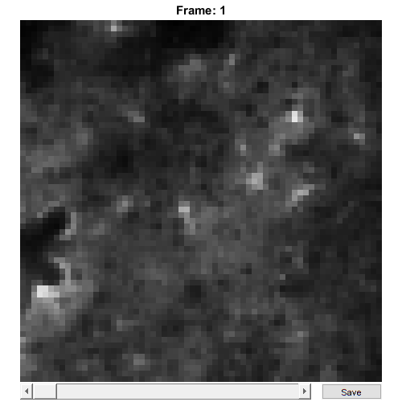

BioFormats
Store raw data from BioFormats images
Contents
Usage
OBJ = BioFormats(FILENAME, CHS, CAL)
Arguments
- FILENAME is the original filename (including the path) of this BioFormats object.
- CHS is a scalar structure that contains information about the meaning of the image channels.
- CAL is a scalar CalibrationPixelSize object.
Details
BioFormats objects are used to contain all raw image data and metadata from Bio-Formats Tif images. This class relies on existing code from the Bio-Formats library. For more information, please visit http://www.openmicroscopy.org/site/products/bio-formats.
See Also
Examples
The following examples require the sample images and other files, which can be downloaded manually, from the University of Zurich website (http://www.pharma.uzh.ch/en/research/functionalimaging/CHIPS.html), or automatically, by running the function utils.download_example_imgs().
In addition, loading Bio-Formats images requires prior installation of the Bio-Formats Java library, which can be downloaded manually from the Open Microscopy Environment website ('http://www.openmicroscopy.org/site/products/bio-formats), or automatically by running the function utils.install_bfmatlab().
Create a BioFormats object interactively
The following example will illustrate the process of creating a BioFormats object interactively. It is possible to do so by using the from_files() method, rather than the constructor (as is demonstrated in this section).
% Call the BioFormats constructor
bf001 = BioFormats()
Use the interactive dialogue box to select the raw image file cellscan_ome_tiff.ome.tif.

The next stage is to define the 'meaning' of the image channels. The first channel represents a cytosolic calcium sensor expressed in astrocytes. Press three and then enter to complete the selection.
----- What is shown on channel 1? -----
>> 0) <blank>
1) blood_plasma
2) blood_rbcs
3) Ca_Cyto_Astro
4) Ca_Memb_Astro
5) Ca_Neuron
6) cellular_signal
7) FRET_ratioAnswer: 3
We have now created a BioFormats object interactively.
bf001 =
BioFormats with properties:
filename: 'C:\...'
isDenoised: 0
isMotionCorrected: 0
metadata_original: [1x1 loci.formats.ome.OMEXMLMetadataImpl]
name: 'cellscan_ome_tiff.ome'
rawdata: [4-D uint16]
t0: 0
metadata: [1x1 Metadata]The process is almost exactly the same to create an array of BioFormats objects; when the software prompts you to select one or more raw images, simply select multiple images by using either the shift or control key.
Create a BioFormats object without any interaction
% Specify the full path to the raw image object fnST002 = fullfile(utils.CHIPS_rootdir, 'tests', 'res', ... 'cellscan_ome_tiff.ome.tif'); % Specify the channels relevant for this raw image channels = struct('Ca_Cyto_Astro', 1); % Create the SCIM_Tif object without any interaction bf002 = BioFormats(fnST002, channels); % View the SCIM_Tif object bf002.plot()
Reading series #1
....................
